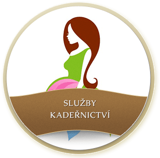
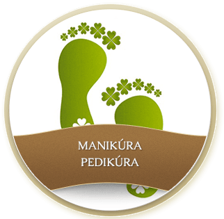

Objednejte se online nebo zavolejte – jsme tu pro vás každý den.
Naším cílem je tvorba účesu v souladu s Vaší osobností a stylem. Respektujeme Vaše přání, proto je naším sloganem "Jednoduše Vy". Nabízíme klasické i nejnovější střihy pro dámy, pány i Vaše dítka. Je možné přijít i bez objednání. Naše otevírací doba je pondělí až pátek 10,00-19,00. Je možné si domluvit termín mimo otevírací dobu, či o víkendu, budeli to v našich časových možnostech, rády vyhovíme.
V kadeřnictví je možné zakoupit profesionální vlasové přípravky, se kterými pracujeme. Preferujeme kvalitní přírodní a zároveň účinnou profesionální vlasovou kosmetiku.
Od firmy KAARAL, doporučujeme řadu MARAES, tato kosmetika má certifikát ECOCERT, což je BIO pro EU. Neobsahuje sulfáty, parabeny, lepek, soli, DEA a další běžně používané chemické složky. Je vhodná také pro alergiky.
Novinkou je u nás luxusní kosmetika PAUL MITCHELL, řada AWPUHI WILD GINGER - unikátní pro rekonstrukci vlasů. Také wellness řada s levandulí pro hydrataci, nebo s citronovou šalvějí pro objem je skvělá!
pracujeme s čistými bylinnými esencemi od firmy Young living, vhodné například na problémy s vlasovou pokožkou, proti padání vlasů, stresu..zkrátka bylinky dostanete na "míru". Přijďte vyzkoušet wellness masáž vlasové pokožky, to musíte zažít!


Kompletní péče o vaše vlasy, ruce i nohy na jednom místě.
Nabízíme nejnovější melírovací a barvící techniky. Používáme kvalitní a zárověň šetrné profesionální barvy i jiné vlasové kosmetiky.
Zjistit vícePo posouzení kvality vlasů doporučujeme vhodnou formu regenerace a následné péče.
Zjistit víceProvádíme prodlužování a zhušťování vlasů metodou s keratinem. Tato metoda je šetrná ke struktuře Vašich vlasů.
Zjistit víceDopřejte si u nás kvalitní péči o své ruce i nohy.
Zjistit víceKompletní ceník Vám rádi představíme přímo u nás v kadeřnictví. Cena u chemických úkonů se může lišit v návaznosti na skutečnou spotřebu materiálu.
Diane kadeřnictví
Veletržní 14
170 00 Praha 7
Po, St, Pá: 10:00 – 19:00
Út, Čt: 9:00 – 19:00
Jana Tomášková: 775 351 999
Dana Hůlková: 774 182 399